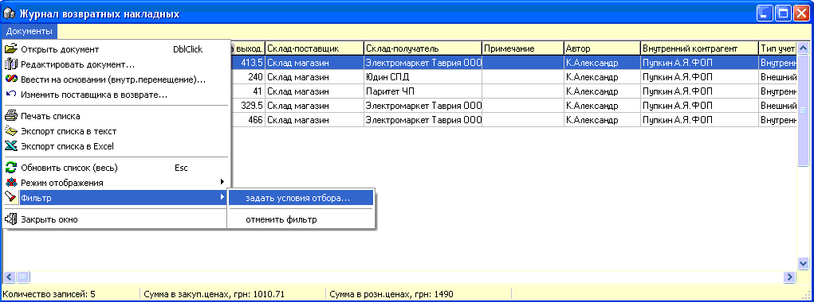

Данный журнал позволяет работать с сохраненными
ранее возвратными накладными.

Так же как и в приходных накладных при редактировании документа
изменения табличной части сохраняются немедленно, а заголовка по факту
выхода из накладной.
Поскольку внутренние перемещения, списания,
расходные накладные и возвраты поставщику являются внутренними документами, то
посредством пункта меню "Режим отображения" можно переходить из одного журнала
в другой.
Фильтр журнала позволяет отобрать документы
с задаными параметрами: